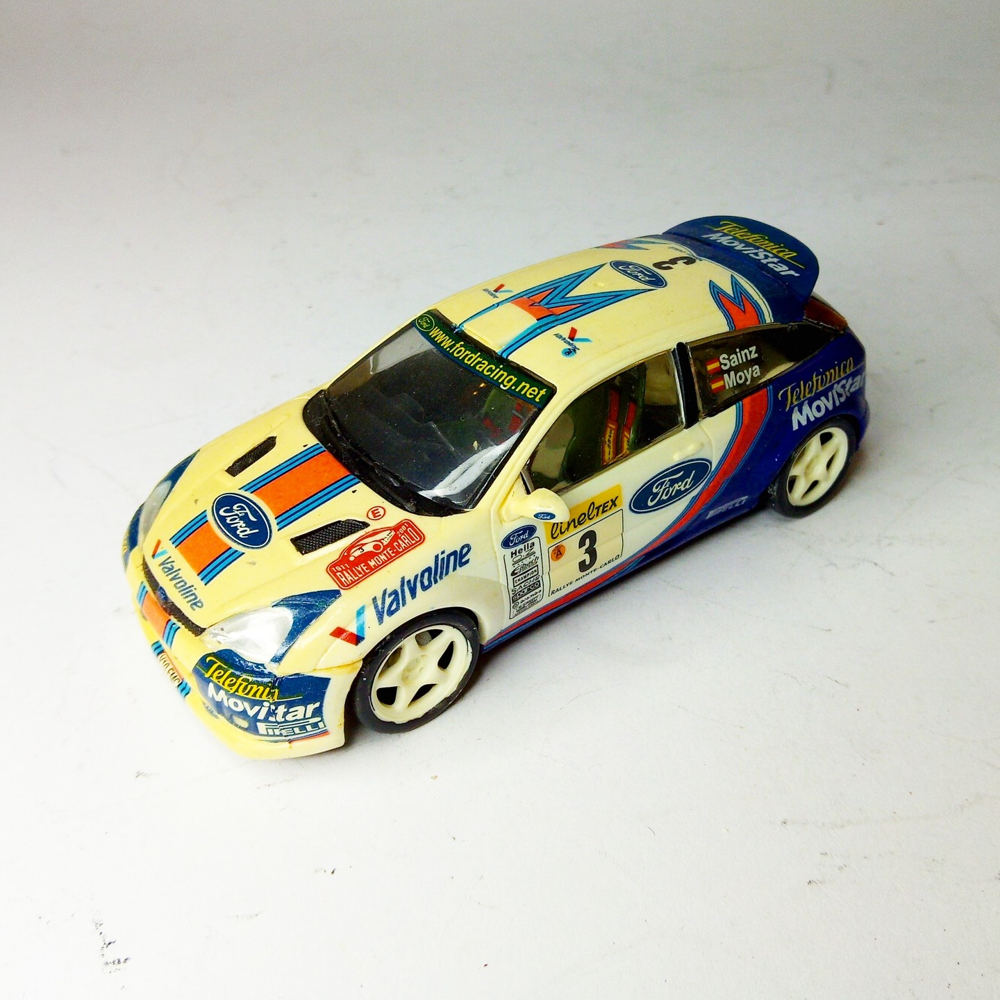
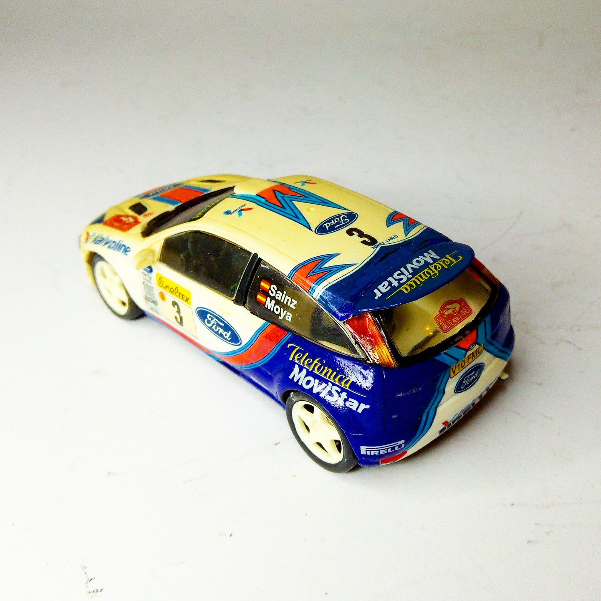

Auto e veicoli stradali · scale model archive
Ford Focus WRC
Ford Focus WRC — Kit: Hornby, Scale: 1/43. Yar 2000 livery #1/43 #Hornby #Ford #Focus

Photo gallery

English description
Yar 2000 livery
#1/43 #Hornby #Ford #Focus
Descrizione italiana
Livrea anno 2000.